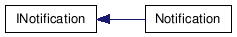
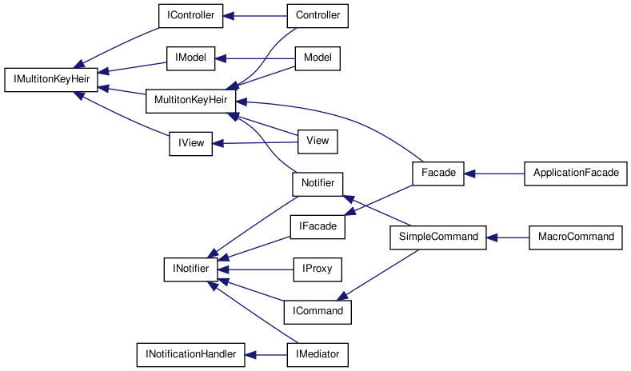
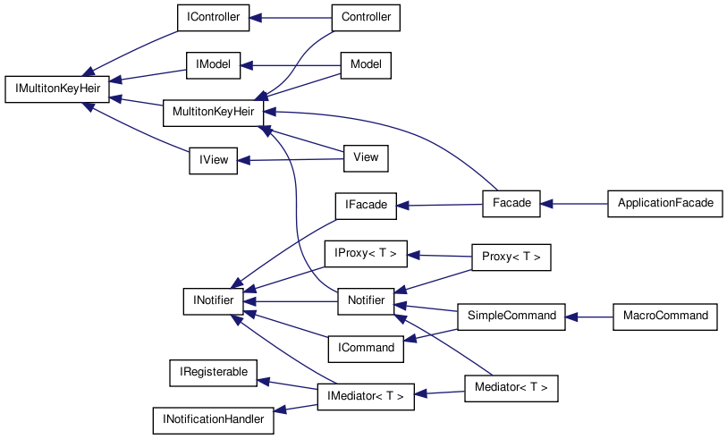
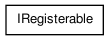
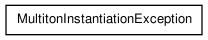
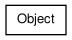

Main Page
Classes
Files
Class List
Class Hierarchy
Class Members
Graphical Class Hierarchy
Go to the textual class hierarchy






Generated on Sun Dec 13 17:47:40 2009 for MVC++ by
1.6.1

 1.6.1
1.6.1